DentalOS AI turns your own lectures and notes into summaries, flashcards, quizzes, clinical cases, and X-ray practice — all grounded in your material. This guide walks through every feature, step by step.
A study aid for dental students. AI answers can be wrong — always verify against your source and instructors. Not for clinical use.
Your private workspace keeps your sources, notes, flashcards, and progress saved.
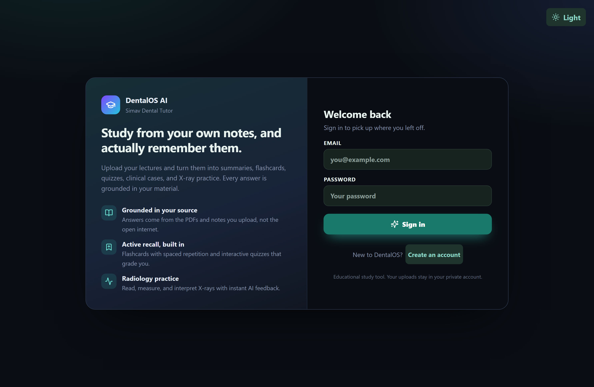
Everything the app generates is built only from the material you add here.
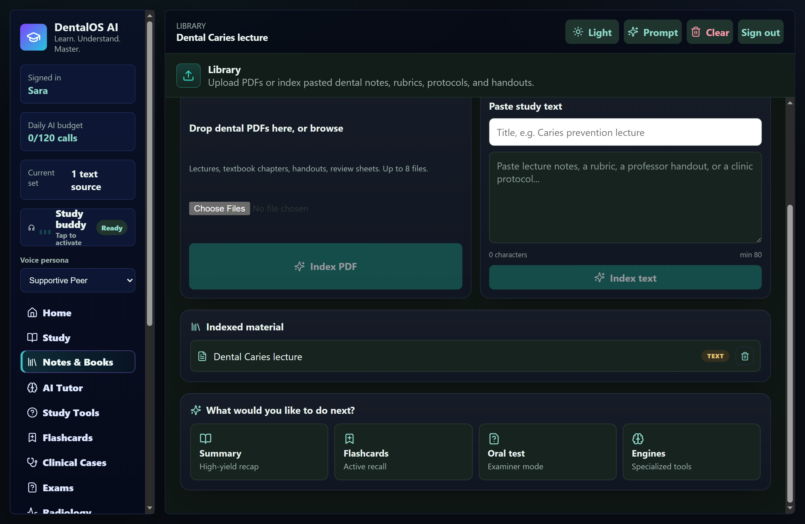
Your home base: jump back in, explore anatomy, and see your progress.
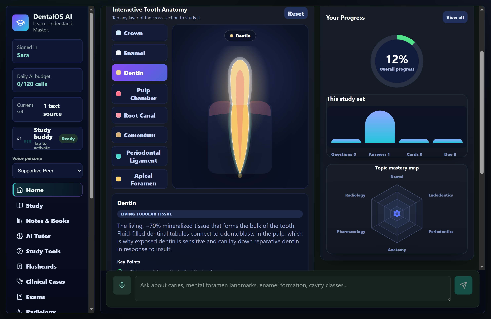
Ask a focused question and get a clear, source-grounded answer.
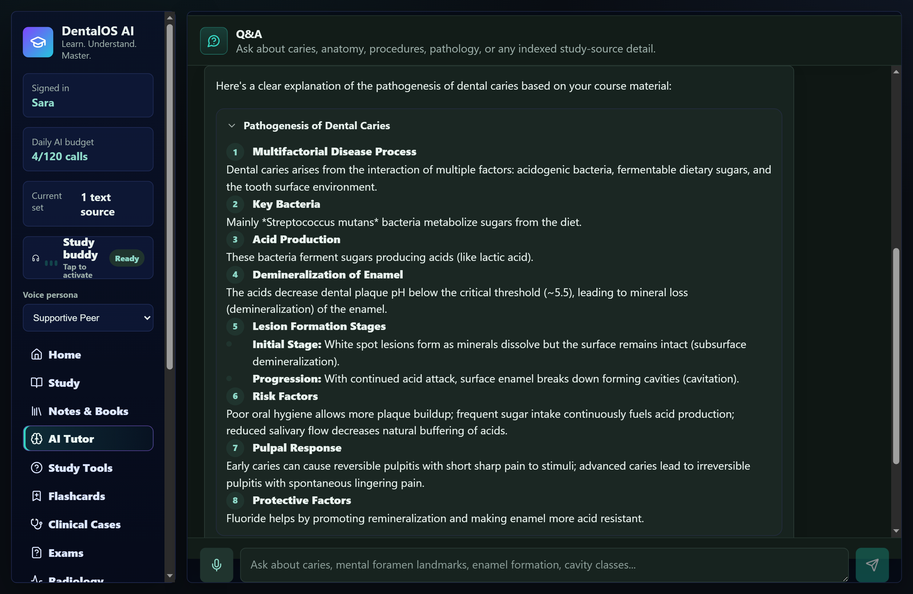
Turn your source into a specific study artifact. Pick the way you want to study.
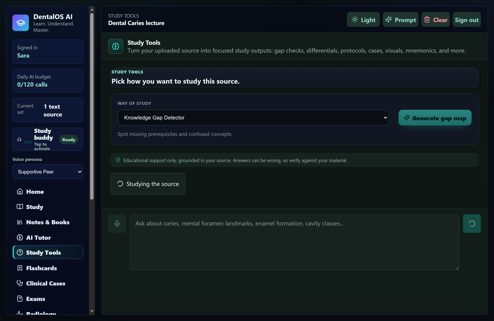
Long content is interactive and scannable — never a wall of text.
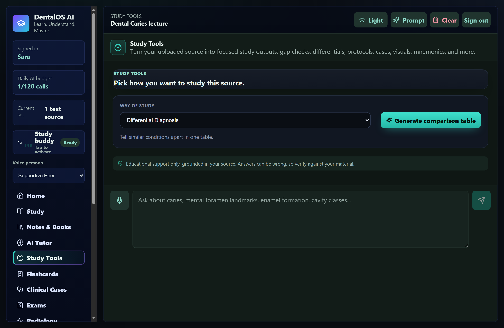
Review one card at a time with spaced repetition.
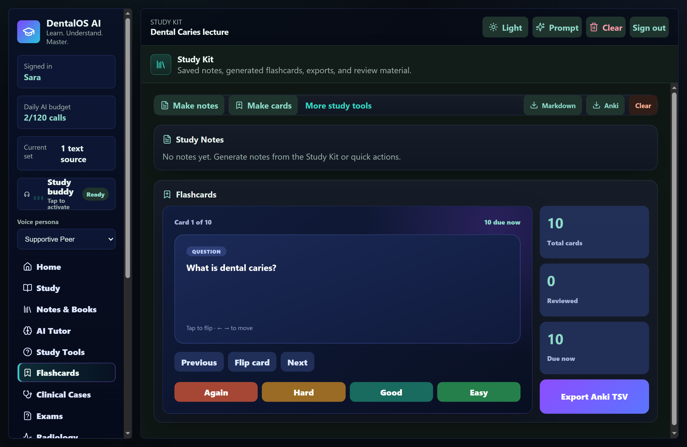
Answer multiple-choice questions and get instant feedback.
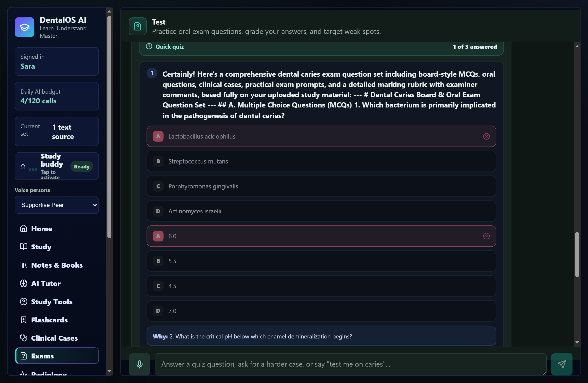
Practice reasoning with patient scenarios built from your notes.
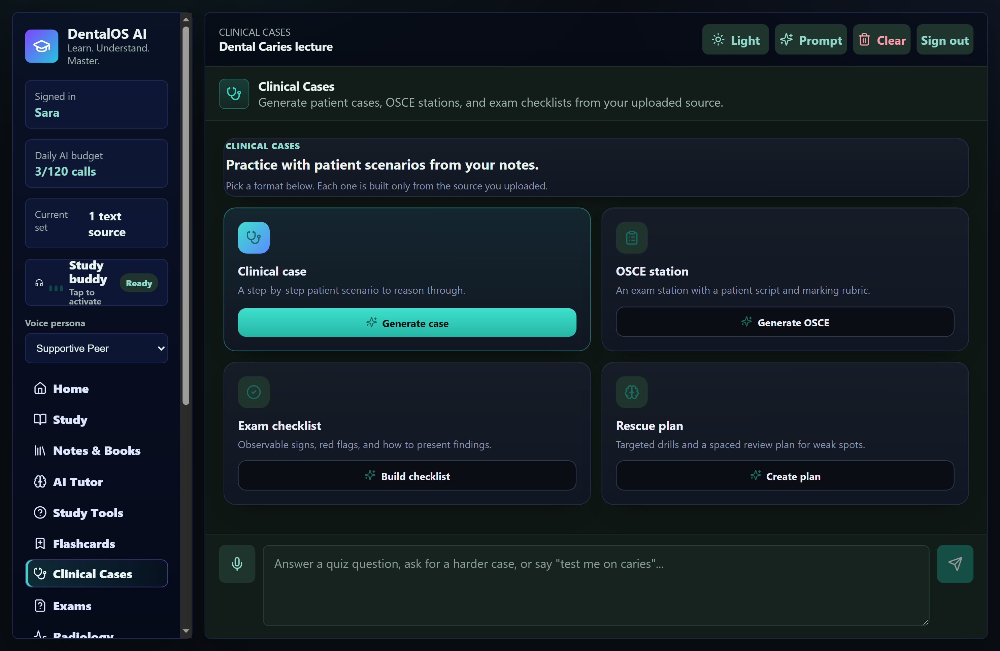
Browse X-rays, then read them with real viewer tools.
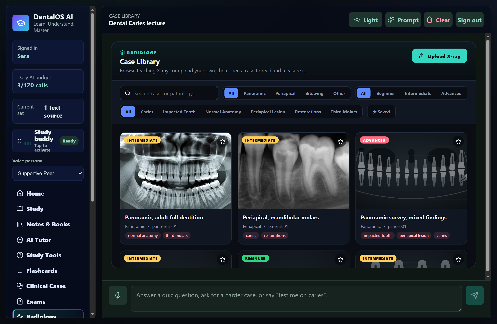
Zoom, adjust, measure, and study labelled structures.
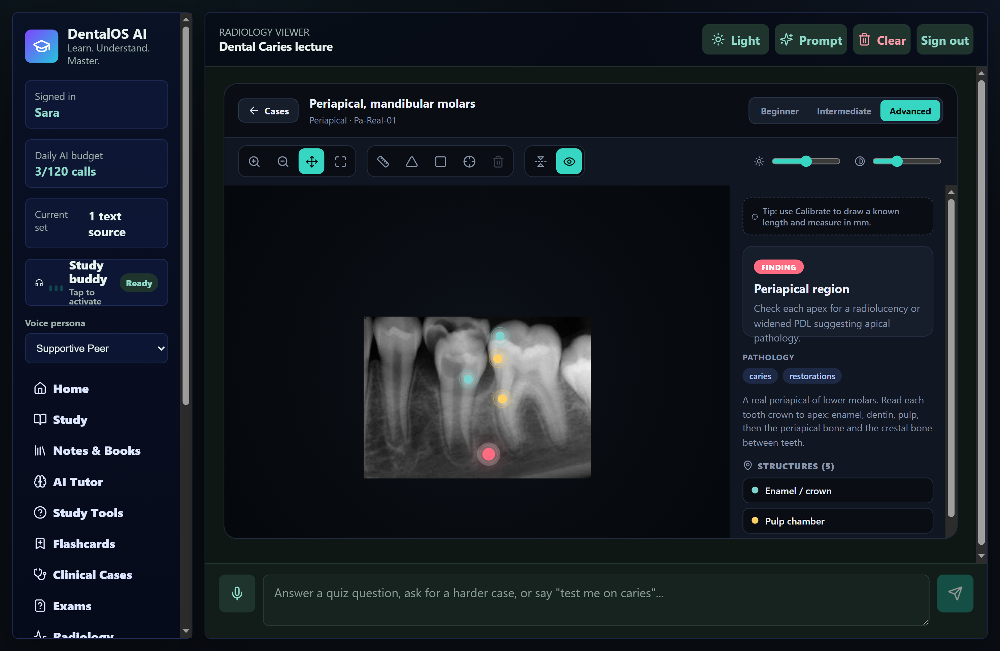
Write your reading of a film and get AI feedback.
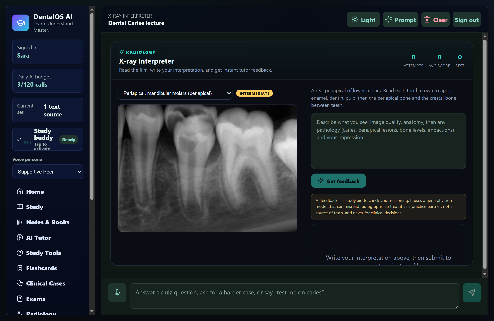
Small things that make daily studying smoother.
The fastest routine: add a source → ask the tutor → make flashcards → quiz yourself → review weak spots. Add radiology practice whenever you want to read films.
DentalOS AI · Simav Dental Tutor — an educational study aid. Always verify against your course material and instructors.